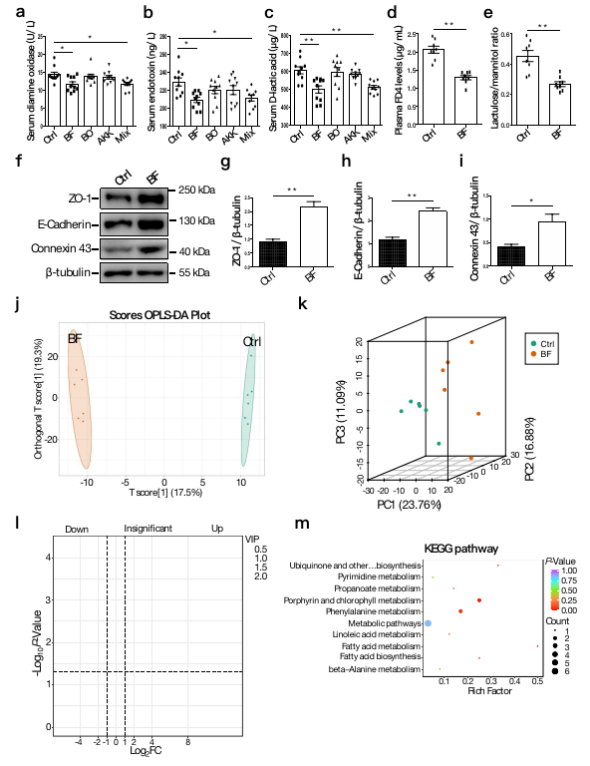

Research Details
Advances in mechanism of the metabolites from gut functional microbes in pigs
Recently, a paper entitled “Gut microbiota-derived 3-phenylpropionic acid promotes intestinal epithelial barrier function via AhR signaling” has been published in the journal “Microbiome”. This work was completed by the professor Xianghua Yan research group from the National Key Laboratory of Agricultural Microbiology, Frontiers Science Center for Animal Breeding and Sustainable Production, and Hubei Hongshan Laboratory
This study mined the Bacteroides fragilis as a gut functional microbe using the Guizhou Congjiang miniature (CM) pig resources and dissected the mechanism of its 3-phenylpropionic acid metabolite-promoted intestinal barrier function. These findings provide important data for improving intestinal health in pigs via manipulation of gut microbiota
The intestinal epithelial barrier is vital for maintaining homeostasis in mammals. The intestinal epithelial barrier confers protection against intestinal invasion by pathogens and exposure to food antigens and toxins. In intensive pig production, intestinal epithelial barrier may be impaired by several stressors, such as early weaning induced stress and feed change-induced stress. The dysfunction of intestinal epithelial barrier has adverse effects on the digestion and absorption of nutrients, and increases the risk of intestinal pathogens infection. Recent studies have shown that gut microbiota confers the function of promoting intestinal epithelial barrier and thus improving intestinal health. Thereby, mining the key microbes that promote the intestinal epithelial barrier function and dissecting the underlying mechanism are of important theoretical significance and application value
The researchers investigated the gut microbiota of seven pig breeds (including commercial Duroc × [Landrace × Yorkshire] (DLY), native Tibetan miniature, native Laiwu, native Shaziling, native CM, native Huanjiang miniature, and native Ningxiang) using metagenomics and 16SrDNA gene amplicon sequencing. These pigs consisted of 56 weaned piglets and 56 finishing pigs. The results indicated an obvious difference in the gut microbiome between CM pigs and commercial DLY pigs. Guizhou CM pig is one of Chinese native pig breed, which has the characters of high meat quality, strong resistance to disease, and resistance to crude feed. CM finishing pigs had stronger intestinal epithelial barrier function than the DLY finishing pigs. Fecal microbiota transplantation (FMT) from CM and DLY finishing pigs to germ-free (GF) mice transferred the intestinal epithelial barrier characteristics. By comparing the gut microbiome of the recipient GF mice, we identified and validated Bacteroides fragilis as a microbial species that contributes to the intestinal epithelial barrier. B. fragilis-derived 3-phenylpropionic acid metabolite had an important function on the enhancement of intestinal epithelial barrier. Furthermore, 3-phenylpropionic acid facilitated the intestinal epithelial barrier by activating aryl hydrocarbon receptor (AhR) signaling. Together, this study reveals the mechanism of gut microbiota-derived 3-phenylpropionic acid metabolite promotes intestinal epithelial barrier using the CM gut microbial resources and the methods of FMT, microbial omics, and GF mouse model.

The first author of this paper is the postdoctoral researcher Jun Hu and the corresponding author is the professor Xianghua Yan. This work was supported by the National Natural Science Foundation of China, the National Postdoctoral Program for Innovative Talents of China, the Natural Science Foundation of Hubei Province, and the Postdoctoral Science Foundation of China.
Abstract
Background
The intestinal epithelial barrier confers protection against the intestinal invasion by pathogens and exposure to food antigens and toxins. Growing studies have linked the gut microbiota to the intestinal epithelial barrier function. The mining of the gut microbes that facilitate the function of intestinal epithelial barrier is urgently needed.
Here, we studied a landscape of the gut microbiome of seven pig breeds using metagenomics and 16S rDNA gene amplicon sequencing. The results indicated an obvious difference in the gut microbiome between Congjiang miniature (CM) pigs (a native Chinese breed) and commercial Duroc × [Landrace × Yorkshire] (DLY) pigs. CM finishing pigs had stronger intestinal epithelial barrier function than the DLY finishing pigs. Fecal microbiota transplantation from CM and DLY finishing pigs to germ-free (GF) mice transferred the intestinal epithelial barrier characteristics. By comparing the gut microbiome of the recipient GF mice, we identified and validated Bacteroides fragilis as a microbial species that contributes to the intestinal epithelial barrier. B. fragilis-derived 3-phenylpropionic acid metabolite had an important function on the enhancement of intestinal epithelial barrier. Furthermore, 3-phenylpropionic acid facilitated the intestinal epithelial barrier by activating aryl hydrocarbon receptor (AhR) signaling.
Results
Here, we studied a landscape of the gut microbiome of seven pig breeds using metagenomics and 16S rDNA gene amplicon sequencing. The results indicated an obvious difference in the gut microbiome between Congjiang miniature (CM) pigs (a native Chinese breed) and commercial Duroc × [Landrace × Yorkshire] (DLY) pigs. CM finishing pigs had stronger intestinal epithelial barrier function than the DLY finishing pigs. Fecal microbiota transplantation from CM and DLY finishing pigs to germ-free (GF) mice transferred the intestinal epithelial barrier characteristics. By comparing the gut microbiome of the recipient GF mice, we identified and validated Bacteroides fragilis as a microbial species that contributes to the intestinal epithelial barrier. B. fragilis-derived 3-phenylpropionic acid metabolite had an important function on the enhancement of intestinal epithelial barrier. Furthermore, 3-phenylpropionic acid facilitated the intestinal epithelial barrier by activating aryl hydrocarbon receptor (AhR) signaling.
Conclusions
These findings suggest that manipulation of B. fragilis and 3-phenylpropionic acid is a promising strategy for improving intestinal epithelial barrier.
Link：https://www.science.org/doi/10.1126/sciadv.adg9116